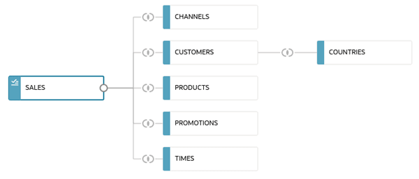
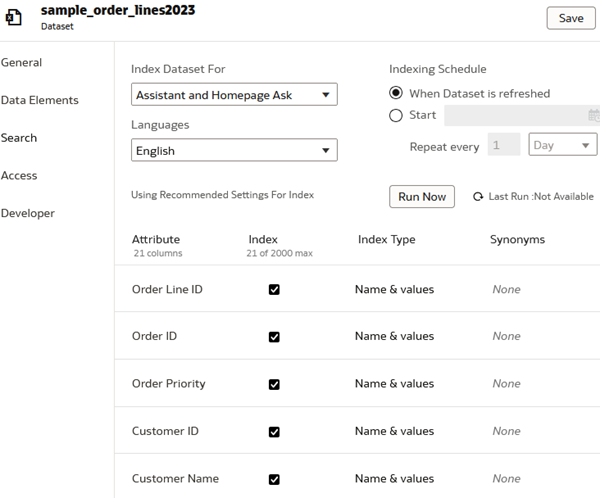
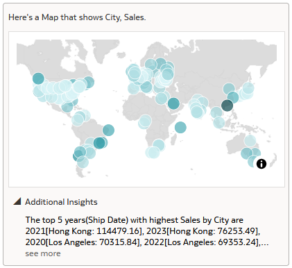

Claims, Benefits, Provider and Member Operations: build trusted data, investigate unusual claims, answer benefit inquiries with evidence, and explore claims-operations insights.
HOW TO USE THIS GUIDE
Follow one section at a time
Read what the task means and why it matters.
Follow the numbered actions; use the screenshot to find the controls.
Compare your result with the checkpoint before continuing.
Save your result and a short note about what you learned.
90 minutes per AIDP session, including setup or readiness and catch-up. No prior AIDP or OCI experience is assumed.
Screenshots appear directly beneath each step. They are Oracle interface examples, not captures of your workshop results; follow the Origami filenames and expected values in the instructions.
Before you begin: use the workshop link and personal folder supplied by your presenter. If a notebook, knowledge base or agent is missing, ask for help. Some live AI exercises still await verification; your presenter will confirm whether to run them or review an example. The OAC session uses a separate dataset and sign-in link.
ORIENTATION · BUSINESS CONTEXT
Help Origami turn claims information into better service decisions
Origami Health is the fictional healthcare organization used in this workshop. Its claims journey connects provider documents, member records, benefit rules, claims processing and payments. Teams need to trust those facts before using analytics or AI to act on them.
The situation
Claims and benefits evidence sits across files, operational records and policy documents. Checking quality, reconciling totals and finding the right terms can require repeated manual investigation.
What Origami needs
A governed data foundation, clear operational metrics and evidence-backed assistance—so claims reviewers, member-service teams and managers can make informed decisions.
Primary business objective
Connect trusted claims and benefits data to faster investigation, clearer member responses and accountable operational follow-up.
AIDP · Build trust and assistance
Reconcile source data, publish reusable Lakehouse tables, prioritize claim reviews and ground member answers in authorized facts and cited policies.
OAC · Turn data into insight
Give managers a consistent view of claims, denials, payments and processing time, with verified natural-language analysis.
Success in this workshop: explain the evidence behind a result, verify it at the checkpoint and identify the decision that still needs human review. No live claim is approved or paid.
Business benefits the workshop proves
Each checkpoint demonstrates a capability with synthetic data—not measured production savings.
Click a stage to open its instructions. Day 2 builds on Day 1; OAC uses a separate dataset. This is a learning map, not proof of live deployment.
See the wider Project Origami Claims process
The document-to-claims vision provides context; these labs do not implement the full operational integration.
Business process context · conceptual target state
From incoming documents to operational and analytical outcomes
01Document intakeProvider and member documents arrive: SOA, LOA, charge slips and claim forms.
02IDP capture & extractionClassify each document, extract claim fields, structure the data and generate confidence scores.
03Human reviewRoute low-confidence fields to a reviewer, correct exceptions and confirm the structured output.
04OHI claims processingCreate, validate, route and adjudicate claims using LOA, pre-authorization and business rules.
05Payment & operationsMove approved claims to payment; track pended claims, exceptions, manual cases and reconciliation.
06Post-processing analyticsFeed dashboards and reporting for trends, turnaround time, backlog, exceptions and FWA investigation.
One continuous flowFrom incoming document to claims processing.
Governed informationStructured data replaces repeated manual encoding.
Connected operationsOHI processing links to payment and downstream reporting.
Decisions with evidenceThe same governed outputs support operations and analytics.
How this maps to the workshop: Day 1 builds governed Bronze, Silver and Gold data; Day 2 adds claim signals, cited benefit evidence and human review; Day 3 uses a separate prepared claims dataset for the analytics experience. The hands-on labs use synthetic data and do not implement live IDP-to-OHI integration.
Adapted from the Project Origami Claims transformation vision supplied for this workshop. Customer branding and project-specific deployment claims are intentionally omitted.
Half-Day 1 / AIDP
Build the trusted data foundation
Objective
Complete the prepared session in sequence and verify each checkpoint before moving on.
Intended outcome
Run the prepared data pipeline, explain one rejected record, validate two Lakehouse query results and trace one governed record.
90 minutes total20 min setup + 60 min exercises + 10 min catch-upPrepared-assets planning estimate; timed pilot pending. Separate slides, breaks and Q&A are outside this block.
Follow this order
01
Setup and access checkSign in, find your notebook, select compute and check that you can read the training data.
Governance checkpointTrace one record and inspect one prepared access-boundary test.
10 min
05
Catch-up and save resultsResolve questions, finish core checks and save evidence. No new mandatory exercise.
10 min
GUIDED STEP
Setup and access check — allow 15–20 minutes
Objective
Get ready to work safely in your assigned environment.
Intended outcome
Identify your workspace, data paths and compute; recognize when to ask for help.
Before you start: supporting files
day1/00_setup_check.ipynb
Follow these steps
Step 1
Find your workshop notebooks
OCI is Oracle’s cloud platform. AIDP Workbench is the application you will use to explore data and run code. A workspace holds your notebooks; a notebook combines explanations, code cells and their results.
What to do
Open the workshop AIDP link supplied by your presenter and sign in with your own account.
Open Workspaces, choose the workshop workspace and open your personal folder. Read CLASS_START_HERE or START_HERE, then open day1/00_setup_check.ipynb.
Where to look Use the breadcrumb above the notebook to see which workspace and folder you opened.Oracle interface example; names and data may differ. Source: Oracle documentation
What you should see / learnYou can see notebook 00 and its first instructions. If your folder is missing, ask the presenter before continuing.
Step 2
Connect the notebook to compute
Compute is the processing engine that runs notebook code. These labs use Spark to work with datasets. Opening a notebook does not, by itself, start running its code.
What to do
At the top of the notebook, select the compute named in your workshop instructions. Wait until it is ready.
Select the first code cell, below “Load administrator-prepared participant bindings”, and choose Run selected cells or its play button. This cell loads the workshop settings; you do not need to enter passwords or change cloud settings.
Where to look Find Run selected cells in the Run menu. Use the menu or play button; the example keyboard shortcuts may differ on Windows.Oracle interface example; names and data may differ. Source: Oracle documentation
What you should see / learnThe cell finishes without an error. Run this first settings cell again when you open each new notebook.
Step 3
Check that you can read the training data
A quick read check confirms that your notebook can reach the synthetic claims data before you begin processing it.
What to do
Read “Read-only readiness check”, select its code cell and run it.
Check your participant identifier and snapshot date, then look at the sample rows and the message “Basic read checks passed”. If a cell fails, show the presenter its error text rather than rerunning it repeatedly.
Where to look Results appear below the cell. Your check may show text as well as a table; this screenshot illustrates table output controls.Oracle interface example; names and data may differ. Source: Oracle documentation
What you should see / learnThe check shows three sample source rows and the workshop snapshot. You are ready to start Lab 1.
Open visual guidance and screen referencesAssigned folder map · example, not a security boundary
pNN stands for your participant number. Open the personal folder named in your class instructions. The notebooks use helper files and data from this pack, so keep them together. If a file is missing, ask your presenter.
Product reference · not a live Origami capture
Find your notebook and its compute
Top breadcrumb: check your assigned folder and notebook, not the example names shown here.
Top right: confirm the facilitator-assigned Spark compute is active.
Read the explanations above each cell. Run the first settings cell in every notebook.
Concept illustration · not live execution evidence
Your notebook route: check, run, inspect, continue
00 · Access check
Find your folder, connect compute and check data access
01 · Bronze
Land source data and preserve trace fields
02 · Silver
Validate, quarantine and deduplicate
03 · Gold
Prepare analytics and benefits outputs
04 · Lakehouse
Publish and reconcile query results
Checkpoint passes → continue
Save the result before moving to the next notebook.
Checkpoint fails → stop and ask
Keep the error and last successful output; do not run downstream cells.
Run these notebooks in order, starting with the first settings cell each time. You are running the sequence yourself; automating it as a workflow is a separate follow-up exercise.
Save: A completed access checklist or a recorded blocker and agreed paired-work fallback.
LAB 0130 MIN
Medallion architecture: Bronze/Silver
Business benefit
Trust the claims entering analysis
Identify bad and duplicate records before they distort reporting.
Demonstrate it: Reconcile all 725 source rows and explain one rejected claim.
Objective
Turn raw claims into trustworthy, traceable data.
Intended outcome
Explain what Bronze and Silver do, why records fail checks and how reconciliation prevents silent data loss.
Before you start: prerequisites and files
Prerequisites
Complete the preceding activity and open the files listed below. Ask your presenter if a file or service is missing.
Files
day1/01_bronze.ipynb
day1/02_silver.ipynb
Follow these steps
Step 1
Open the Bronze notebook and check its settings · 3 min
Medallion architecture organises data into layers: Bronze keeps incoming records, Silver checks and cleans them, and Gold shapes them for business questions. You will follow one claims dataset through these layers.
What to do
Open day1/01_bronze.ipynb and select the workshop compute.
Run the first settings cell. Check that the participant identifier is yours and the snapshot date is 2026-09-01. Keep the supplied data paths unchanged.
Where to look Check the notebook name in the breadcrumb and the compute selector above the cells.Oracle interface example; names and data may differ. Source: Oracle documentation
What you should see / learnThe notebook has loaded your workshop settings with no error. You can explain why the raw data is kept before cleaning.
Step 2
Load the raw claims into Bronze · 7 min
Bronze preserves the original values, including values that may later fail a quality check. Source metadata tells you where each record came from; this traceability helps investigate a problem without losing the original evidence.
What to do
Read “Land the seven source datasets”, then run its code cell and wait for completion.
Inspect the dataset counts: claims has 725 source rows. In the sample, find source_record_id, claim_id, submitted_amount and _source_file. Notice that a raw amount can still be text.
Where to look Select the cell under the named heading, run it once, and read the output before opening the next notebook.Oracle interface example; names and data may differ. Source: Oracle documentation
What you should see / learnSeven source datasets are loaded and claims has 725 rows. Identify the source-file field on one claim.
Step 3
Clean the data and investigate a rejected row · 12 min
Silver standardises values, removes duplicate records and separates rows that fail checks. A quarantined row is set aside for investigation—it does not mean that an insurance claim has been denied or identified as fraud.
What to do
Open day1/02_silver.ipynb. Run its first settings cell, then the cell under “Evaluate, deduplicate, quarantine and reconcile”.
Find a rejected record in the output and read its reject_reason. Explain which check failed and why that row should not enter the trusted dataset yet. Leave the training source unchanged.
Where to look Read the result below the Silver cell. Inspect the rejection reason, not only the success indicator.Oracle interface example; names and data may differ. Source: Oracle documentation
What you should see / learnYou see accepted, rejected and duplicate counts, and can explain one rejected row using its actual reason.
Step 4
Account for every source row · 8 min
Reconciliation asks whether every input row has a known outcome. Without it, a successful-looking pipeline could silently drop or duplicate claims and distort reporting.
What to do
Compare the summary with 725 input rows = 720 accepted + 4 rejected + 1 duplicate. These categories must not overlap.
Save the reconciliation summary and your explanation of one rejected row in your workshop notes. The notebook also saves silver.json for the next lab.
Where to look Use Copy or Download for table outputs when available; for text output, copy the summary or take a screenshot.Oracle interface example; names and data may differ. Source: Oracle documentation
What you should see / learnAll 725 rows are accounted for. You can explain the difference between a quality rejection and a duplicate.
Check your result
Explain why Bronze preserves the source values and Silver applies quality checks.
Account for all 725 rows: 720 accepted, 4 rejected and 1 duplicate.
Explain one rejection using its recorded reason; a quality rejection is not an insurance denial.
Save: A reconciliation summary and an explanation of one rejected record.
Open visual guidance and screen referencesProduct reference · not a live Origami capture
Run one cell at a time
Select the next code cell, then use Run selected cell(s) or the cell play control.
Wait for completion and inspect the result before continuing. Do not start with Run all.
The reference image shows Mac shortcuts; use the menu or play control on your laptop.
Expected fixture reconciliation · verify your output
Every source claim must be accounted for
725source rows
=
720accepted
+
4rejected
+
1duplicate
Keep the groups disjoint. Pick one rejected row and explain its rule failure. If counts differ, stop here; do not continue to Gold or change the expected contract.
Concept illustration · not live execution evidence
What changes between Bronze, Silver and Gold?
BRONZE · retainOriginal source values + source/snapshot traceQuestion: where did this row come from?
SILVER · validateAccepted records separated from rejects and duplicatesQuestion: can this record be trusted?
GOLD · organizeClaim detail, summaries and benefits lookup outputsQuestion: what business question can we answer?
Valid references → accepted
A claim refers to known member/provider records.
Invalid reference → quarantine
Keep the record and rule failure for investigation.
Illustrative rule path, not a new fixture or extra task. Cleaning is not silently deleting: reconcile accepted, rejected and duplicate counts.
Optional / take-home — outside the core timebox
Inspect multi-plan enrollment joins and precomputed document-evidence flags.
Write a new transformation or rerun the complete pipeline from scratch.
LAB 0220 MIN
Publish Claims and Benefits data to AI Lakehouse
Business benefit
Reuse one governed data foundation
Give claims analysts and member-service teams data at the right level of detail.
Demonstrate it: Validate claims totals and the supplied member-benefit queries.
Objective
Make validated claims and benefits data available for analysis.
Intended outcome
Distinguish claim-level facts from summaries and avoid double-counting when combining data.
Before you start: prerequisites and files
Prerequisites
Complete the preceding activity and open the files listed below. Ask your presenter if a file or service is missing.
Files
day1/03_gold.ipynb
day1/04_lakehouse.ipynb
Follow these steps
Step 1
Understand the Gold datasets · 3 min
Gold reshapes clean data around business questions. A dataset’s grain means what one row represents: one claim, one monthly summary, or one member-plan enrollment. Mixing grains can double-count money or members.
What to do
Open day1/03_gold.ipynb and read “Build Gold outputs without enrollment fan-out”.
Identify the claim-detail, monthly-summary and member-plan outputs before running them. A member with two plans must not cause every claim to be counted twice.
Where to look Read the notebook’s explanation above its code cell before running the transformation.Oracle interface example; names and data may differ. Source: Oracle documentation
What you should see / learnYou can describe what one row represents in the three outputs.
Step 2
Build Gold and publish it to the Lakehouse · 7 min
The AI Lakehouse makes the curated tables available for SQL and analytics. The workshop connection is already supplied, so your task is to run the data transformation and check its results.
What to do
Run notebook 03’s first settings cell and then its Gold cell. Check the five output counts: claim detail 720, monthly claims 36, member plans 100, benefit usage 80 and benefit schedule 6.
Open day1/04_lakehouse.ipynb, run its first settings cell, then “Publish into pre-created participant tables”. Wait for completion; stop and ask for help if the output reports a mismatch.
Where to look Run the named cells in order. A running cell needs to finish before you inspect its output.Oracle interface example; names and data may differ. Source: Oracle documentation
What you should see / learnAll five Gold datasets are built and the Lakehouse publish check succeeds. Reusing matching existing rows on a repeat run is expected.
Step 3
Validate the two business queries · 7 min
A table existing is not enough: the answers must be correct. The supplied SQL checks confirm both claims totals and the member’s current plans.
What to do
In notebook 04, run “Run the two participant checks”. Compare the 720-claim count and amount totals with the supplied expected results.
Inspect the active-plan result: the teaching member has BASE and PLUS for 2026; the expired 2025 plan is excluded. Keep each plan’s limits separate—two active plans do not prove that their limits can be added.
Where to look Inspect both query outputs, not just the first table. The example rows in this image are not the workshop’s expected values.Oracle interface example; names and data may differ. Source: Oracle documentation
What you should see / learnBoth queries match the expected results. You can explain why an expired plan must not be used in a current benefits answer.
Step 4
Keep the evidence for the next session · 3 min
Saving the actual query results gives you a baseline for checking the member facts used by the AI exercises in Day 2.
What to do
Keep the two query outputs with your Lab 1 reconciliation notes. The notebook saves lakehouse-two-checks.json.
Write one sentence explaining how claim detail differs from a monthly summary, and one explaining why plan limits remain separate.
Where to look Copy, download or capture the outputs that show your actual checks.Oracle interface example; names and data may differ. Source: Oracle documentation
What you should see / learnYou have two checked query results and can explain the main double-counting risk.
Check your result
Both Lakehouse checks match the expected claims totals and current member plans.
Explain why joining every claim to multiple member plans would inflate totals.
Keep BASE and PLUS limits separate until a coordination rule is established.
Save: Two validated query results and the Day 2 snapshot reference.
Open visual guidance and screen referencesOrigami learning diagram · synthetic examples
Concept illustration · not live execution evidence
Where do notebooks, files and tables live?
Workspace / assigned folder
Your notebooks and exercise instructions: what you open and run.
Catalog → schema → volume
File access and source locations: where the prepared files are found.
Spark / Delta processing
Compute executes the transformations; a notebook is not a database table.
External Lakehouse connection
Prepared database tables and read-only queries: where published outputs are checked.
Use your workshop settings for the actual names and paths. A folder tells you where a file is organised; permissions determine whether you can access it.
Optional / take-home — outside the core timebox
Inspect full duplicate/orphan/overlap checks and repeat-run evidence.
Author workflow dependencies, connection settings or new Lakehouse tables.
GUIDED STEP
Governance exercise
Business benefit
Trace data and protect member access
Make the source of a result and its permitted audience explicit.
Demonstrate it: Save lineage evidence and the actual access-test result.
Objective
Understand where data came from and who may access it.
Intended outcome
Distinguish a data trace from an access control; folder names alone do not enforce security.
Before you start: supporting files
day1/governance.md
Follow these steps
Step 1
Follow one claim through the layers · 5 min
Data lineage is the story of where a record came from and how it changed. Here you will follow identifiers and outputs to build that story; this is different from inspecting an automatically generated lineage graph.
What to do
Open day1/governance.md and find its example claim C0001 / source record R0001.
Find its source identifier in Bronze, its quality outcome in Silver and its matching Gold record. Record the identifiers that connect the three.
Where to look Use the notebook result tables to compare identifiers across layers.Oracle interface example; names and data may differ. Source: Oracle documentation
What you should see / learnYou can explain how a business-facing record relates to its source and quality checks.
Step 2
Understand an access boundary · 5 min
Governance also controls who may read which data. A folder label describes organisation; an actual permission check is what allows or rejects access.
What to do
Inspect the allowed/denied access-test evidence supplied by your presenter. Identify the permitted scope and the request that was rejected.
If a live denial trace is missing, mark the check incomplete; reviewing an example is not a successful live access test. Explain why a different folder name alone would not protect another member’s information.
Where to look The breadcrumb identifies location, not proof of permission. Use the test outcome—not the folder name—to discuss access.Oracle interface example; names and data may differ. Source: Oracle documentation
What you should see / learnYou can distinguish tracing data from restricting access. Ask for help if you cannot see the test evidence.
Open visual guidance and screen referencesOrigami learning diagram · synthetic examples
Trace the record; test the boundary
TRACESource → accepted outputRecord the source key, applied rule, output location and snapshot.
TESTOwn slot / other slotUse facilitator-prepared positive and negative access tests. Names alone do not prove isolation.
SAVEEvidence or a blockerRecord the actual result. A missing or failed boundary test is not a pass.
Do not change IAM, grants or another participant’s configuration during this exercise.
Save: A record trace and a role-to-data access check.
GUIDED STEP
Catch-up and save results — 10 minutes
Objective
Leave Day 1 with a clear, reusable evidence trail.
Intended outcome
Distinguish verified execution from a viewed example and explain what Day 2 can safely reuse.
Follow these steps
Step 1
Finish your checks and save your work · 10 min
Use this time to resolve a missed checkpoint and make your notes understandable to someone who did not watch you run the lab.
What to do
Revisit any incomplete check with the presenter. Save your actual outputs and a short explanation of what you learned.
If you used a supplied example because a service was unavailable, label it as an example and note which live step remains unfinished.
Where to look Keep the actual notebook output or agent response alongside your notes.Oracle interface example; names and data may differ. Source: Oracle documentation
What you should see / learnYour notes distinguish what you ran successfully, what failed and what you only reviewed as an example.
Save: Saved Day 1 evidence and an honest completion checklist.
Half-Day 2 / AIDP
From claims signals to benefits assistance
Objective
Complete the prepared session in sequence and verify each checkpoint before moving on.
Intended outcome
Explain one claim flag, verify benefits citations, modify and test a preconnected Copilot, and record a human review decision.
90 minutes total5 min readiness + 75 min exercises + 10 min catch-upPrepared-assets planning estimate; timed pilot pending. Separate slides, breaks and Q&A are outside this block.
Human reviewReview a prefilled service brief; accept, edit or escalate with a reason.
10 min
06
Catch-up and save resultsFinish core checks, resolve questions and save evidence; no additional lab.
10 min
GUIDED STEP
Day 2 readiness check
Objective
Confirm that Day 2’s prepared services and data are available.
Intended outcome
Recognize how the AI exercises depend on validated data and preconfigured services.
Follow these steps
Step 1
Reconnect and find today’s exercises · 5 min
Day 2 builds on trusted data from Day 1. You will use a prepared scoring model, a searchable set of benefit documents and a Copilot that combines member facts with those documents.
What to do
Open your workshop folder and confirm the Day 1 results or the recovery snapshot provided by your presenter.
Locate day2/05_claim_scoring.ipynb and guides 06–08. Open the benefits knowledge base and Copilot links supplied for the class; ask the presenter if either is unavailable.
Where to look Locate your Day 2 files in the same workspace; notebook compute and AI services are different resources.Oracle interface example; names and data may differ. Source: Oracle documentation
What you should see / learnYou know where to start each exercise. If a service is unavailable, label any viewed example as a walkthrough rather than your own live run.
Save: Readiness confirmed or a recorded blocker.
LAB 0315 MIN
Score claims anomalies for investigation
Business benefit
Prioritize claims for investigation
Use explainable signals to focus a reviewer’s attention—not to declare fraud.
Demonstrate it: Explain one review flag and one legitimate high-value claim.
Objective
Use a model score to prioritize human review, not declare fraud.
Intended outcome
Interpret a review flag, recognize false positives and retain the model/version reference.
Before you start: prerequisites and files
Prerequisites
Complete the preceding activity and open the files listed below. Ask your presenter if a file or service is missing.
Files
day2/05_claim_scoring.ipynb
model/prepared_model.json
Follow these steps
Step 1
Read what the scoring model uses · 3 min
A model uses input features to estimate which claims deserve review. A score is a prioritisation signal, not a verdict of fraud. The model is already trained; this exercise focuses on interpreting its output.
What to do
Open day2/05_claim_scoring.ipynb and read the feature and model notes.
Identify the claim information available at scoring time, such as amount and missing-attachment indicators. Notice why a later investigation outcome must not be an input to the prediction.
Where to look Start with the explanatory text above the scoring cell, not just its code.Oracle interface example; names and data may differ. Source: Oracle documentation
What you should see / learnYou can name an input feature and explain the difference between a model signal and a confirmed outcome.
Step 2
Run the prepared scorer · 5 min
Batch scoring applies the same model to the validated claims so reviewers can focus their attention consistently.
What to do
Select the workshop compute and run the first settings cell.
Run “Score with the prepared model; no training in class”. Wait for the results and locate the review flags and reason_codes.
Where to look Run the scoring cell once and wait for its result before evaluating individual claims.Oracle interface example; names and data may differ. Source: Oracle documentation
What you should see / learnThe scorer produces 720 scored claims and identifies the model/version used.
Step 3
Compare a flag with a legitimate claim · 5 min
A false positive is a legitimate claim flagged for review. Seeing one helps you understand why an automated flag must be checked against other evidence.
What to do
Choose one flagged claim and read its reason codes.
Compare it with teaching claim C0601, a legitimate high-value example that is flagged REVIEW. Explain why a large amount alone does not establish fraud.
Where to look Read the claim identifier, flag and reasons together; a high score alone is not the explanation.Oracle interface example; names and data may differ. Source: Oracle documentation
What you should see / learnYou can give one reason for review and one reason a human should not automatically reject the claim.
Step 4
Save your review observation · 2 min
Recording the model version and evidence makes your interpretation reproducible and gives another reviewer enough context to question it.
What to do
Save the selected claim, its score/flag, reason codes and model/version in your notes; keep scoring.json.
Write a short recommended next check, not a payment or denial decision.
Where to look Keep the relevant output rows together with your written interpretation.Oracle interface example; names and data may differ. Source: Oracle documentation
What you should see / learnYour note separates the model’s output from your proposed human investigation.
Check your result
Explain one review flag using the actual reason codes.
Describe why legitimate high-value claim C0601 still needs a human interpretation.
Keep the model/version with your observation.
Save: One annotated investigation example with its score/version reference.
Open visual guidance and screen referencesOrigami learning diagram · synthetic examples
From a model signal to a human investigation
INPUTPrepared claim featuresUse the supplied model card and snapshot; no training in the core timebox.
SIGNALReview queueInspect one flag and its explanation. C0601 is the legitimate high-value teaching example.
DECISION OWNERHuman investigatorA REVIEW flag prioritizes investigation; it is not a fraud finding or a denial instruction.
Save one claim identifier, the supporting signal and your caveat. No operational action is executed.
Concept illustration · not live execution evidence
Model preparation is different from classroom scoring
BEFORE CLASS / EXTENSION
Prepare featuresTrain & evaluateVersion the model
Native experiment tracking and registry demonstration need separate preparation and verification.
YOUR CORE EXERCISE · 15 MIN
Load prepared scorerScore claimsExplain one review flag
Save model/version evidence and compare a legitimate example. No new model training in this block.
A high score is a review signal, not proof of fraud. Native registered-model parity remains a separate, unverified acceptance gate.
Optional / take-home — outside the core timebox
Inspect precision/recall and review-capacity tradeoffs in the seeded experiment.
Run training, compare AutoML candidates or change thresholds.
LAB 0415 MIN
Test the Benefits Knowledge Base
Business benefit
Find benefits evidence faster
Retrieve current policy terms with citations instead of relying on an unsupported answer.
Demonstrate it: Verify a supported citation and recognize an evidence gap.
Objective
Answer benefit questions using the right policy evidence.
Intended outcome
Verify a grounded answer and recognize when missing evidence requires an explicit limitation.
Before you start: prerequisites and files
Prerequisites
Complete the preceding activity and open the files listed below. Ask your presenter if a file or service is missing.
Files
day2/06_benefits_knowledge_base.md
day2/retrieval-tests.json
documents/ingestion-manifest.json
Follow these steps
Step 1
Explore the benefits knowledge base · 3 min
A knowledge base is a searchable collection of documents. Retrieval-augmented generation (RAG) finds relevant passages and uses them to support an answer. The plan, version and effective date determine whether a passage is relevant.
What to do
In Master catalog, open the workshop catalog and schema, then Knowledge Bases. Select the benefits knowledge base named by your presenter.
Inspect the available document information and the supplied benefits files. Locate the BASE and PLUS plan versions and effective dates.
Where to look Knowledge Bases appears under a catalog schema. Example catalog and schema names will differ from yours.Oracle interface example; names and data may differ. Source: Oracle documentation
What you should see / learnYou know which policy documents the exercise can draw on. If the knowledge base is unavailable, ask the presenter before testing.
Step 2
Ask a question the documents can answer · 6 min
A grounded answer should let you check its policy claim against a specific document passage, rather than relying on the model’s general knowledge.
What to do
Open the presenter-provided RAG test agent and its Playground. Start a new session and submit R1 from retrieval-tests.json.
Check the answer against the current BASE consultation benefit: 12 consultations per year. Open the cited evidence and verify the plan, version and section.
Where to look Use the session control in Playground to start a clean test. Questions are submitted through the test agent, not directly on the knowledge-base list.Oracle interface example; names and data may differ. Source: Oracle documentation
What you should see / learnThe answer is supported by the correct policy passage. Record the actual answer and citation, not only the expected value.
Step 3
Test a question with insufficient evidence · 4 min
A useful assistant must recognise when the documents do not establish an answer. An unsupported benefit should not become a confident promise of coverage.
What to do
Start a fresh session and submit R2, the unsupported ROBOTIC benefit question.
Check that the answer states the evidence gap instead of inventing an entitlement. If it makes a policy claim, inspect its citation and record the mismatch.
Where to look Create a fresh session so the previous answer does not influence this separate test.Oracle interface example; names and data may differ. Source: Oracle documentation
What you should see / learnThe answer clearly states insufficient evidence, or you have recorded a failed test for discussion.
Step 4
Record what passed and what did not · 2 min
Testing both a supported and an unsupported question checks two different skills: finding evidence and avoiding unsupported conclusions.
What to do
Save the R1 and R2 answers, references and pass/fail observations in the supplied exercise notes.
Write one sentence explaining why R1 is answerable and R2 needs clarification or escalation.
Where to look Capture the response in Playground. A screenshot of the knowledge-base list alone does not show how the agent answered.Oracle interface example; names and data may differ. Source: Oracle documentation
What you should see / learnYour test notes include actual answers and evidence for both cases.
Check your result
R1 uses the correct current BASE policy passage and citation.
R2 recognises that the documents do not support a confident entitlement.
Record failed checks as well as successful ones.
Save: Two retrieval checks: one supported answer and one unsupported question.
Open visual guidance and screen referencesProduct reference · not a live Origami capture
Locate the prepared knowledge base
Open Master catalog, then the catalog and schema assigned by the facilitator.
Open Knowledge Bases and select the prepared benefits index. Do not create or ingest during the core lab.
Run R1 and R2 through the assigned RAG test interface; a KB is not queried directly.
Expected retrieval checks · not an actual agent answer
A useful answer points back to a current source
R1 · SUPPORTED
BASE 2026 · CONSULT
12 visits per year
BASE-2026 → section CONSULT
Check the plan, version, inquiry date and retrieved section.
R2 · UNSUPPORTED
ROBOTIC service
Insufficient evidence
No invented limit or eligibility decision.
Record the gap and request human review.
Read the actual retrieved chunks, not just the answer. Use only current allowlisted documents. If no functioning RAG test is available, mark the live lab blocked; manual document reading is a labelled fallback.
Concept illustration · not live execution evidence
A knowledge base has a preparation path and a question path
FACILITATOR PREPARATION · BEFORE CLASS
Approved current documentsChunks + metadataCompleted retrieval index
Verify source versions, ingestion success and a working RAG test interface.
Check the cited passage. Missing evidence must stay visible—not be replaced by invented policy.
This illustrates the intended retrieval design. A created knowledge-base shell or started ingestion job is not proof that retrieval works.
Optional / take-home — outside the core timebox
Test exclusions, document requirements, expired versions and conflicting passages.
Create or ingest a new knowledge base.
LAB 0535 MIN
Adapt and test the Member Benefits Inquiry Copilot
Business benefit
Prepare better member-service answers
Combine authorized member facts and policy evidence in a reviewable response.
Demonstrate it: Test SQL facts, cited benefit terms and denial of other-member access.
Objective
Combine authorized member facts with cited benefit guidance.
Intended outcome
Explain SQL versus document retrieval, assess a combined answer and distinguish tool-enforced access from prompting.
Before you start: prerequisites and files
Prerequisites
Complete the preceding activity and open the files listed below. Ask your presenter if a file or service is missing.
Files
day2/07_member_benefits_copilot.md
day2/copilot-tests.json
contracts/copilot-design.json
Follow these steps
Step 1
Follow the two evidence routes · 5 min
The Member Benefits Inquiry Copilot combines two sources: SQL looks up structured member facts; RAG retrieves benefit-policy passages. One tells you what is recorded for the member, the other what the policy says.
What to do
Open your workshop Copilot in the visual builder.
Follow the supplied SQL and document-retrieval routes. Identify where member facts enter the answer and where policy citations come from.
Where to look Use the connected flow provided for the class. This Oracle reference shows the builder controls on an empty canvas, not your finished flow.Oracle interface example; names and data may differ. Source: Oracle documentation
What you should see / learnYou can explain which question needs a database lookup and which needs a policy document.
Step 2
Add a clear citation instruction · 5 min
Instructions guide how an agent presents its answer. They can require it to show evidence and uncertainty, but they do not replace database permissions or member-access checks.
What to do
Select the instruction-bearing node identified in your exercise and open Configuration.
Add: “For every policy statement, cite plan, version and section. State evidence gaps and unresolved coordination rules explicitly.” Save your own workshop copy.
Where to look Select the node to display Configuration, then locate its instructions field.Oracle interface example; names and data may differ. Source: Oracle documentation
What you should see / learnThe instruction is saved. Keep the supplied tools and model settings as they are.
Step 3
Run the three Copilot tests · 18 min
These tests check facts, reasoning and privacy separately. A convincing answer is only useful if it refers to the right member, uses current evidence and respects the allowed data scope.
What to do
In Playground, start a fresh session for each supplied test C1, C2 and C3.
C1: compare the authorised member’s active BASE/PLUS plans and usage with the expected facts; exclude the expired plan. C2: check the current citations and separate 12 and 6 consultation limits—do not add them into an entitlement.
C3: test the supplied other-member request. The answer must not disclose that member’s details. Review the tool result with the presenter; a polite refusal alone does not prove access was blocked.
Where to look Use a new session for each test, then inspect the response and available tool trace.Oracle interface example; names and data may differ. Source: Oracle documentation
What you should see / learnYou have an actual answer, tool evidence and pass/fail observation for each case. Record any failed check without treating it as a completed success.
Step 4
Create a draft service brief · 7 min
A service brief turns the conversation into something a colleague can review: member facts, policy evidence and unresolved questions, not an automatic coverage decision.
What to do
Open the supplied service-brief template. Replace its example text with your C2 result.
Include the verified member facts, citations, separate plan limits and unresolved coordination rule. Link or capture the test evidence for the next human-review activity.
Where to look Use the tested Playground response as your source; write the brief in the supplied template outside this screen.Oracle interface example; names and data may differ. Source: Oracle documentation
What you should see / learnYour draft reflects the answer you actually tested and clearly marks any gap in evidence.
Check your result
Compare C1 member facts with the expected structured results.
C2 cites current policies and does not add separate plan limits.
C3 does not expose another member’s data; discuss the tool evidence with the presenter.
Save: One instruction change, three test results and a draft service brief.
Open visual guidance and screen referencesOrigami learning diagram · synthetic examples
One inquiry, two evidence sources, one reviewed draft
FIRSTCheck member scopeTrusted identity → server-side scope check. Deny unauthorized access before returning any member rows.
THENRead-only SQL + retrievalActive plans and usage from SQL; current benefit terms and citations from the KB.
FINALLYCited synthesisPresent each plan separately. Show missing coordination rules and hand the draft to a person.
This is the intended Origami design, not a screenshot of a deployed flow. The real tool boundary—not an instruction to the model—must enforce scope.
Product reference · not a live Origami capture
Recognize the agent canvas
Palette on the left: recognize the node types; the class flow should already be connected.
Center: trace the provided SQL and retrieval routes. This blank reference canvas is not the class starting state.
Use the facilitator-assigned flow. A missing flow or inactive AI compute is a stop-and-ask checkpoint.
Active BASE + PLUS. CONSULT usage 2 and 1. Expired enrollment excluded.
C2 · SQL + RAG
Limits 12 and 6 shown separately, with both current citations. Do not add the entitlements.
C3 · DENY
The designated other-member query is rejected at the tool boundary. No other-member facts are returned.
Concept illustration · not live execution evidence
Which evidence source should answer which question?
Member inquiry → trusted identity and server-side scope check
Not authorized → stop
Return no other-member facts. A prompt alone cannot enforce this boundary.
Authorized → route by question
Use bounded read-only tools and the inquiry date.
SQL branch · structured facts
Which plans are active? What usage has been recorded? Query only the authorized member.
Retrieval branch · policy evidence
What does the current plan document say? Return passages with plan, version and section.
Combine evidence → show each plan separately → disclose gaps → human-reviewed draft
An explanation of the prepared design, not an importable flow or screenshot of a deployed agent. Do not add BASE and PLUS entitlements without an explicit coordination rule.
Optional / take-home — outside the core timebox
Change supervisor routing or add an additional answer-format instruction.
Inspect and rerun the facilitator's policy-conflict and prompt-injection tests.
Example questions
For my authorized synthetic member and the selected inquiry date, show the active plans and relevant benefit usage. Explain the source of each fact.
What does the current benefit guide say about this service, including limits, exclusions and required documents? Cite the plan and section.
This synthetic member has two active plans. Compare the relevant evidence, identify missing coordination rules and draft a service brief for a representative to review.
The plan data and policy passage disagree. Show the conflict, avoid a definitive coverage answer and identify the review required.
GUIDED STEP
Human-in-the-loop service brief
Business benefit
Keep decisions accountable
Keep coverage and claims decisions with a person, not an automatically accepted AI draft.
Demonstrate it: Record accept-draft, edit or escalate with a reason.
Objective
Keep a person accountable for the draft service brief.
Intended outcome
Separate AI assistance from a final coverage decision and recognize when evidence needs escalation.
Before you start: supporting files
day2/08_human_review.md
templates/service-brief-prefilled.md
Follow these steps
Step 1
Check the draft against its evidence · 4 min
Human review is where someone takes responsibility for checking the draft. Fluent language must not hide a wrong member, an outdated document or an unresolved rule.
What to do
Open your service brief and compare its member facts with the structured query results.
Reopen the cited policy passages. Check the plan, version and section, and keep unresolved coordination rules visible.
Where to look Return to the tested answer and its evidence; the review decision is recorded in your brief, not in the agent configuration.Oracle interface example; names and data may differ. Source: Oracle documentation
What you should see / learnEvery retained fact has evidence, and unsupported statements are identified for correction.
Step 2
Record a review decision · 4 min
Review status describes whether the draft is usable, needs an edit or needs someone with more authority or evidence. It is not a final insurance-coverage decision.
What to do
Choose REVIEWED, EDIT_REQUIRED or ESCALATED in your brief.
Give a short reason. Correct unsupported wording or explain what evidence is still needed.
Where to look Compare the draft with the original response before recording your decision in the template.Oracle interface example; names and data may differ. Source: Oracle documentation
What you should see / learnYour review status and reason make the next human action clear.
Step 3
Save the reviewed brief · 2 min
A reviewer and timestamp make it clear who checked this version and when. This closes the workshop evidence trail.
What to do
Add your reviewer name and timestamp to the brief, then save it privately with the test notes.
Summarise one verified finding and one limitation. The lab does not send a message, create a live case or approve a payment.
Where to look Keep a capture of the tested response with your saved brief; this screen is supporting evidence, not the review form.Oracle interface example; names and data may differ. Source: Oracle documentation
What you should see / learnYou have a reviewed training brief, not an automated operational action.
Open visual guidance and screen referencesOrigami learning diagram · synthetic examples
Turn the answer into a reviewable service brief
EVIDENCEWhat did we verify?Assigned member, inquiry date, active plans, usage and source citations.
LIMITATIONWhat is unresolved?Missing evidence or coordination rules. No final coverage or payer choice.
REVIEWAccept draft / edit / escalateRecord the human reviewer’s reason and the next information needed.
Accepting a draft means it is suitable for human follow-up. It does not approve coverage, payment or a claim.
Save: A completed brief with reviewer decision, timestamp and rationale.
GUIDED STEP
Catch-up and save results — 10 minutes
Objective
Finish with an honest record of your results and remaining gaps.
Intended outcome
Explain which outputs are supported by evidence and which still require validation.
Follow these steps
Step 1
Finish your checks and save your work · 10 min
Use this time to resolve a missed checkpoint and make your notes understandable to someone who did not watch you run the lab.
What to do
Revisit any incomplete check with the presenter. Save your actual outputs and a short explanation of what you learned.
If you used a supplied example because a service was unavailable, label it as an example and note which live step remains unfinished.
Where to look Keep the actual notebook output or agent response alongside your notes.Oracle interface example; names and data may differ. Source: Oracle documentation
What you should see / learnYour notes distinguish what you ran successfully, what failed and what you only reviewed as an example.
Save: Saved Day 2 evidence and an honest completion checklist.
HALF-DAY 3 / OAC
Claims Command Center & OAC Assistant
Days 1–2 build trusted claims data and a member-assistance workflow. Day 3 switches to the claims manager’s view: explore claim volumes, denials, payments and processing time. It uses a separate, prepared synthetic claims star dataset from the reference OAC workshop—not the tables produced in Days 1–2. Districts and coverage programs are fictional teaching categories, not actual business structures. Denials are not evidence of fraud.
45 min · source estimateSix-part analytics lab; your presenter will confirm the pace.45 minutes is the reference core-lab estimate, not a tested classroom duration. Ask for the prepared workbook if you need help catching up.
Let analysts reach prepared data without repeating ingestion or sharing admin credentials.
Demonstrate it: Confirm the five training tables in the separate schema.
Objective
Reach the prepared claims data safely.
Intended outcome
An analytics connection exposes prepared data without repeating ingestion.
Follow these steps
Step 1
Open your analytics connection
Oracle Analytics Cloud (OAC) is where you build charts and ask questions about data. A connection lets it read the prepared database tables without uploading another copy.
What to do
Sign in to the OAC URL provided by your presenter. Open the approved AI Lakehouse connection. If you cannot see it, ask the presenter to check access; do not create credentials or infrastructure during class.

Where to look This example shows the dataset editor and table relationships, not the connection sign-in or calculation dialog. Use the lab’s table names and formulas, not the sample SALES names.Oracle interface example; names and data may differ. Source: Oracle documentation
What you should see / learnYou can open the connection supplied for this class.
Step 2
Recognise the fact and dimensions
The fact table holds monthly claims measurements. Dimension tables add labels such as district, month and claim type so you can group those measurements.
What to do
Confirm the separate training schema contains ORIGAMI_OAC_FACT_CLAIMS_MONTHLY, ORIGAMI_OAC_DIM_DATE, ORIGAMI_OAC_DIM_DISTRICT, ORIGAMI_OAC_DIM_COVERAGE_PROGRAM and ORIGAMI_OAC_DIM_CLAIM_TYPE.
Where to look This example shows the dataset editor and table relationships, not the connection sign-in or calculation dialog. Use the lab’s table names and formulas, not the sample SALES names.Oracle interface example; names and data may differ. Source: Oracle documentation
What you should see / learnYou can identify one fact table and four dimensions.
Checkpoint: All five tables are visible. The schema is separate from the AIDP workshop outputs.
OAC STEP 2
Create the claims dataset
Business benefit
Create a reusable business dataset
Give dashboard builders a common claims model.
Demonstrate it: Save one fact table and four dimensions in your own dataset.
Objective
Bring the claims fact and business dimensions into one model.
Intended outcome
A reusable dataset separates data modelling from dashboard design.
Follow these steps
Step 1
Start a dataset
A dataset is the reusable model a workbook uses. It brings selected tables and their relationships together in one place.
What to do
Choose Create → Dataset, select the approved connection and expand the training schema.
Where to look This example shows the dataset editor and table relationships, not the connection sign-in or calculation dialog. Use the lab’s table names and formulas, not the sample SALES names.Oracle interface example; names and data may differ. Source: Oracle documentation
What you should see / learnThe dataset editor opens on your training connection.
Step 2
Add the five tables and save
Start with the measurements in the fact table, then add the descriptive dimensions. Saving a personal name lets you continue without replacing someone else’s work.
What to do
Add ORIGAMI_OAC_FACT_CLAIMS_MONTHLY first, then the four dimensions. Save as OrigamiClaimAnalysis_<your-slot> so you do not overwrite another learner’s work.
Where to look This example shows the dataset editor and table relationships, not the connection sign-in or calculation dialog. Use the lab’s table names and formulas, not the sample SALES names.Oracle interface example; names and data may differ. Source: Oracle documentation
What you should see / learnYour dataset contains five tables and has your own saved name.
Checkpoint: The dataset contains one fact table and four dimensions; your saved name includes your assigned slot.
OAC STEP 3
Join and profile the self-service model
Business benefit
Prevent misleading management totals
Keep claim volumes, denial rates and processing-time measures consistent.
Demonstrate it: Reconcile joins and calculations against the supplied totals.
Objective
Prevent incorrect totals before building visualizations.
Intended outcome
Correct grain and aggregation make business metrics trustworthy.
Follow these steps
Step 1
Connect each dimension to the fact
A join matches related rows using a key. Many fact rows may share a district, but each district key should identify only one district row; otherwise totals can be duplicated.
What to do
Join fact.service_month_date_key to date.date_key; fact.district_key to district.district_key; fact.program_key to coverage_program.program_key; fact.claim_type_key to claim_type.claim_type_key. Each dimension key must be unique. Use the fact as the preserved grain; do not join dimensions to each other.
Where to look This example shows the dataset editor and table relationships, not the connection sign-in or calculation dialog. Use the lab’s table names and formulas, not the sample SALES names.Oracle interface example; names and data may differ. Source: Oracle documentation
What you should see / learnFour joins connect the fact to its dimensions using the specified keys.
Step 2
Check field types and sample values
Profiling shows the shape of the data before you chart it. Attributes describe groups; measures are numbers you aggregate. A month label alone mixes the same month across years.
What to do
Inspect profiles, nulls, distributions and sample values. Keys and descriptive fields are attributes; claim counts and amounts are additive measures. Parse full_date and week_start_date as dates. Use a year-month date for trends, not month name alone.
Where to look This example shows the dataset editor and table relationships, not the connection sign-in or calculation dialog. Use the lab’s table names and formulas, not the sample SALES names.Oracle interface example; names and data may differ. Source: Oracle documentation
What you should see / learnDates behave as dates, numeric measures aggregate correctly and labels remain attributes.
Step 3
Calculate the overall denial rate
An overall rate must use the totals in the current filter context. Averaging each group’s rate gives small groups the same influence as large groups.
What to do
Define Denial rate as SUM(denied_claims) / SUM(claims_submitted), with a zero-denominator guard; format as a percentage. Never SUM or take an unweighted average of the stored row-level denial_rate.
Where to look This example shows the dataset editor and table relationships, not the connection sign-in or calculation dialog. Use the lab’s table names and formulas, not the sample SALES names.Oracle interface example; names and data may differ. Source: Oracle documentation
What you should see / learnYour percentage divides total denials by total submitted claims and handles zero claims safely.
Step 4
Calculate approximate processing days
A claims-weighted average gives larger groups proportionate influence. Because the source stores rounded group averages, this is an approximation, not a measurement of every individual claim.
What to do
For Processing days, use SUM(avg_processing_days * claims_submitted) / SUM(claims_submitted), guarded for zero. Label it “Processing days (approx.)”: it weights already-rounded group averages, not individual claim durations. The presenter must confirm the denominator before presenting it as an operational SLA.
Where to look This example shows the dataset editor and table relationships, not the connection sign-in or calculation dialog. Use the lab’s table names and formulas, not the sample SALES names.Oracle interface example; names and data may differ. Source: Oracle documentation
What you should see / learnThe measure is labelled Processing days (approx.) and uses claims as weights.
Step 5
Reconcile the model
Compare known totals before trusting the charts. A join can look correct but still duplicate or omit fact rows.
What to do
Reconcile unfiltered and filtered totals with expected-results.json in the OAC ZIP. Confirm the joins do not duplicate or discard fact rows. Amounts use synthetic source units; do not relabel them as real local-currency financial results.
Where to look This example shows the dataset editor and table relationships, not the connection sign-in or calculation dialog. Use the lab’s table names and formulas, not the sample SALES names.Oracle interface example; names and data may differ. Source: Oracle documentation
What you should see / learnUnfiltered totals and both supplied filter cases match expected-results.json.
Checkpoint: The joined dataset reconciles to the supplied counts and totals, including the two filter checks.
Open visual guidance and screen references
Four many-to-one joins from the claims fact
Fact key
Dimension key
service_month_date_key
dim_date.date_key
district_key
dim_district.district_key
program_key
dim_coverage_program.program_key
claim_type_key
dim_claim_type.claim_type_key
Concept illustration · not live execution evidence
Four dimensions explain one claims fact
DATE · when
date_key ← service_month_date_key
DISTRICT · where
district_key ← district_key
CLAIMS FACT · measures
Monthly group: date × district × program × claim type. Counts, amounts and group averages.
PROGRAM · coverage category
program_key ← program_key
CLAIM TYPE · what service
claim_type_key ← claim_type_key
Every arrow maps a fact key to one unique dimension row. The join must keep all 622 fact groups; these are the separate OAC reference tables, not the AIDP outputs.
Product reference · not a live Origami capture
Recognize the dataset join diagram
The selected fact table sits at the center of the relationships.
This Oracle image uses SALES sample tables, not Origami claims. Follow the four-key mapping in this lab; do not copy these table names.
Check that each fact row matches one dimension row; compare totals before and after the joins.
Enable business users to ask questions over the approved dataset.
Demonstrate it: Confirm indexing completes and Assistant is available.
Objective
Enable questions over the prepared claims dataset.
Intended outcome
Assistant needs an accessible, indexed dataset before it can answer data questions.
Follow these steps
Step 1
Choose fields for Assistant search
Indexing prepares a dataset for natural-language search. It is separate from saving the dataset and is needed before Assistant can use it.
What to do
From the dataset’s Actions menu, choose Inspect → Search. Set Index Dataset For to Assistant and Homepage (wording can vary by version). Review the indexed fields, save and select Run Now.

Where to look Locate Inspect → Search, the Assistant indexing choice and Run Now. The screenshot does not prove that your indexing has completed.Oracle interface example; names and data may differ. Source: Oracle documentation
What you should see / learnThe dataset is configured for Assistant indexing with the intended business fields.
Step 2
Wait for indexing to finish
A submitted indexing request is not yet a searchable dataset. Check the completed status before asking questions so you can distinguish readiness problems from answer problems.
What to do
Wait until indexing completes; starting an index is not completion. If the Assistant option is missing, ask the presenter to verify availability and the Use Assistant in Workbooks permission. Do not change tenancy access yourself.
Where to look Locate Inspect → Search, the Assistant indexing choice and Run Now. The screenshot does not prove that your indexing has completed.Oracle interface example; names and data may differ. Source: Oracle documentation
What you should see / learnIndexing completes and Assistant is available, or you have asked the presenter for help.
Checkpoint: Indexing has completed and the workbook’s Assistant is available; otherwise record the blocker and use the presenter’s prepared example.
Open visual guidance and screen referencesConcept illustration · not live execution evidence
Indexing is a readiness sequence, not one successful click
1 · Configure
Inspect → Search; select Assistant and Homepage.
2 · Run and complete
Run Now starts the job. Wait for completion and check status.
3 · Test and verify
Ask a dataset question; compare its filters and metrics with the dashboard.
Option missing
Presenter checks availability and the required permission.
Answer differs
Inspect aggregation, filters and time grain before trusting it.
An OAC Assistant answer is not benefits-document retrieval. Index completion and answer validation are separate checkpoints.
Product reference · not a live Origami capture
Locate Assistant indexing controls
Open your own dataset’s Inspect → Search tab; the sample dataset name is not your assigned dataset.
Locate Index Dataset For, review the field scope, save and use Run Now.
The pictured configuration is not evidence of completed indexing. Wait for completion and test your workbook.
Compare volumes, denials and processing patterns in one management view.
Demonstrate it: Validate both filters and save the Executive Overview canvas.
Objective
Turn claim metrics into a claims manager’s decision view.
Intended outcome
Different chart types answer different operational questions.
Follow these steps
Step 1
Create your workbook and canvas
A workbook holds your analysis; a canvas is one page of charts. The Executive Overview brings the main claims measures together for a manager.
What to do
Create a workbook from your dataset, or open a private copy of the presenter’s prepared workbook. Save as Origami Claims Command Center_<your-slot>; name the canvas Executive Overview. Use Freeform layout and the title Origami Claims Processing Command Center.

Where to look This example shows a workbook visual and Assistant panel, not the finished Origami dashboard. Use the build specification for the required claims charts.Oracle interface example; names and data may differ. Source: Oracle documentation
What you should see / learnYour private workbook and Executive Overview canvas are saved.
Step 2
Build the measures and charts
KPI tiles show headline values. Trends show change over time, while comparisons show which districts or claim types contribute to an outcome.
What to do
Add district_name and claim_type as canvas filters. Build the six KPI tiles and five analysis visuals in the layout below. Use full_date at month grain for sparklines and the trend.
Where to look This example shows a workbook visual and Assistant panel, not the finished Origami dashboard. Use the build specification for the required claims charts.Oracle interface example; names and data may differ. Source: Oracle documentation
What you should see / learnThe six KPI tiles and five analysis visuals use the build specification below.
Step 3
Make the dashboard readable
Consistent labels, units and spacing make it easier to compare figures without misreading an amount as a count or a rate.
What to do
Arrange the KPI tiles across the top. Hide repeated measure titles, format counts/amounts/percentages appropriately, and keep labels readable. High/low markers, rounded cards and subtle shadows are optional finishing touches.
Where to look This example shows a workbook visual and Assistant panel, not the finished Origami dashboard. Use the build specification for the required claims charts.Oracle interface example; names and data may differ. Source: Oracle documentation
What you should see / learnTitles, units and number formats are readable; optional decoration does not hide information.
Step 4
Test both filters and save
A filter changes which rows contribute to the charts. Testing known cases checks that the canvas behaves as one coherent analysis.
What to do
Apply North Borough, reset, then apply Outpatient. Check the KPI results against the supplied reference totals and confirm every relevant chart responds. Clear filters, save, and capture one evidence screenshot.
Where to look This example shows a workbook visual and Assistant panel, not the finished Origami dashboard. Use the build specification for the required claims charts.Oracle interface example; names and data may differ. Source: Oracle documentation
What you should see / learnBoth filter cases match the reference totals and the saved screenshot shows your result.
Checkpoint: Both filters work across the canvas, numbers reconcile, and your private workbook is saved.
Open visual guidance and screen referencesExecutive Overview layout · build schematic, not an OAC screenshot
District filter · Claim type filter
Claims submittedClaims deniedDenial rateSubmitted amountPaid amountProcessing days (approx.)
Heatmap
Donut
Table
Bubble
Trend
Dashboard visual inventory
Business question / visual
Fields and configuration
KPI: Claims submitted
SUM(claims_submitted); monthly bar sparkline
KPI: Claims denied
SUM(denied_claims); monthly line sparkline
KPI: Denial rate
Ratio of summed denied/submitted claims; monthly area sparkline
Label claim_type; X SUM(claims_submitted); Y approximate Processing days; size SUM(claims_submitted)
Trend: How is denial rate changing?
Month on X; calculated Denial rate on Y; forecast only if available and meaningful, outside the core checkpoint
OAC STEP 6
Ask questions with OAC Assistant
Business benefit
Explore questions with evidence
Use natural language to investigate patterns while checking the numbers.
Demonstrate it: Save one answer reconciled to the dashboard and a follow-up question.
Objective
Explore claims patterns in natural language and verify the answers.
Intended outcome
Analytics AI answers dataset questions; it is different from the benefits-document Copilot in Day 2.
Follow these steps
Step 1
Ask and verify a claims question
Assistant translates your question into an analysis over the dataset. It is different from the benefits-document Copilot: check its chosen measures, filters and time grouping before accepting an answer.
What to do
Open Assistant in the workbook. Ask one question at a time; check the metric, aggregation, filters and time grain before interpreting the result.
Try these questions one at a time: Which districts contribute the most denied claims? Which claim types need denial review? Compare denied claims and processing days by claim type. How is denial rate trending by month?
Where to look Inspect the generated visual and answer. The screenshot uses sample sales data; your questions use the claims dataset.Oracle interface example; names and data may differ. Source: Oracle documentation
What you should see / learnEach answer refers to the intended claims metric and agrees with your dashboard.
Step 2
Keep one supported insight
A useful insight states what the data supports and what still needs investigation. A high denial count is not, on its own, evidence of fraud.
What to do
Open Additional Insights if offered. Save one useful visualization to your canvas and write one supported observation plus one follow-up question. If Assistant uses the stored denial_rate incorrectly, reformulate using the governed calculation and validate against the dashboard.
Where to look Look for Additional Insights and compare the answer with your own workbook before saving it.Oracle interface example; names and data may differ. Source: Oracle documentation
What you should see / learnYou save a verified visual, a supported observation and a follow-up question.
Checkpoint: Save one verified answer and its evidence. Do not ask policy-coverage questions here or treat denials as proof of fraud.
Open visual guidance and screen referencesProduct reference · not a live Origami capture
Inspect the answer and Additional Insights
An answer can include a visualization and an expandable Additional Insights section.
This sales-by-city example illustrates the controls only. Origami questions use claims, districts and claim types.
Check the answer’s metric, filters and time grain against your dashboard before saving an insight.
Start in your assigned AIDP folder during class. These public files let you review a notebook, data source or reference individually; download the complete pack if you need a recovery copy. The downloads contain synthetic data and no private credentials.
Provider capacity JSON and spatial access: explore provider-network capacity and access in a take-home lab after the core pipeline.
Streaming, additional AutoML training, and HTTP/MCP case actions: optional follow-ups after runtime and integration validation.
Clinical guideline support, production product configuration and CRM replacement: separate discovery tracks, outside the hands-on core.
REFERENCES
Oracle official documentation
Oracle documentation links checked on 29 September 2026. Screens and feature availability can change by release and region. The supplied screenshots are Oracle product references, not captures of your deployed environment; follow your assigned lab and facilitator guidance.
Optional reference material, mapped to Origami’s labs. These links do not add tasks to the 90-minute AIDP sessions or confirm live deployment.
Overview of OCI Object Storage — Buckets, objects, namespaces and access. Participants use prepared sources; no bucket creation is required in the core labs.
Configure AIDP workflow jobs — Orchestration, scheduling and run inspection; workflow authoring is outside the core classroom timebox.
Responsible-use reminders
Use synthetic claims and member data only. Do not upload real health records, identifiers, passwords or wallets to notebooks, AI prompts or public repositories.
Index only approved workshop documents and necessary analytics fields. Check plan, version, inquiry date and source citations.
Limit SQL tools to approved read-only tables and the authorized member scope. Enforce access in the tool/data layer, not only in prompts.
Keep RAG retrieval within the approved benefits Knowledge Base; report missing evidence and unresolved coordination rules.
Verify Copilot and OAC Assistant answers against the underlying evidence. Claim flags and denials are not proof of fraud.
Keep coverage, eligibility, claim denial, payment and medical decisions with authorized people. Workshop outputs are reviewable drafts, not operational actions.